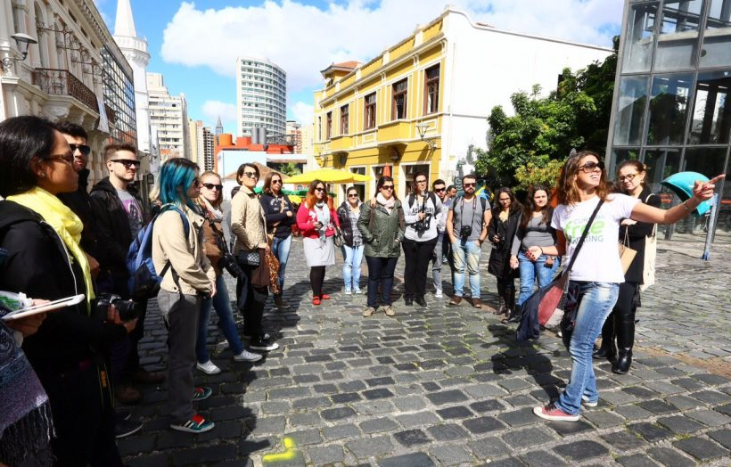
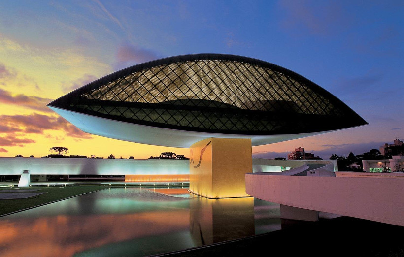
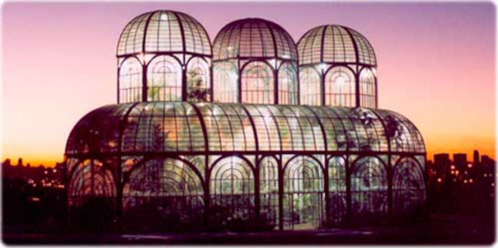

Curitiba é um ótimo destino para o turismo de final de semana ou feriados prolongados. A cidade é bem fácil de ser percorrida e não faltam opções do que fazer de graça na capital do estado do Paraná. Com muitas atrações e pontos turísticos em Curitiba gratuitos ou a preços acessíveis, a cidade é também um bom roteiro para quem está com orçamento apertado, mas não abre mão de viajar. Pensando em quem não quer gastar demais, mas está louco para dar uma voltinha por aí, preparamos este post com o que fazer em Curitiba quase de graça. São dicas que ajudarão você a viajar sem precisar se endividar.
Os free walking tours estão por todas as grandes cidades do mundo e em Curitiba não é diferente. Fazer um passeio a pé, guiado por um morador, é uma ótima maneira para começar a entender uma cidade. Você terá a oportunidade de saber mais sobre a história de Curitiba e as principais atrações. Sabemos que os curitibanos têm fama de fechados, porém um free walking tour com as pessoas certas fará você esquecer essa história. Aproveite o conhecimento dos locais para descobrir eventos, baladas e outras atrações que acontecerão enquanto estiver na cidade. Dicas de dentro são sempre bem-vindas!
O Museu Oscar Niemeyer (MON) é um dos melhores espaços dedicados à arte em Curitiba. Também conhecido entre os moradores como Museu do Olho, o MON oferece tanto exposições permanentes quanto itinerantes. O acervo conta com nomes como Di Cavalcanti, Andy Warhol, Tarsila do Amaral, Caribé, Candido Portinari, Tomie Ohtake, Helena Wong e, claro, o arquiteto Oscar Niemeyer, que também assina o projeto arquitetônico do MON. A visita vale tanto por dentro quanto por fora. Aproveite os maravilhosos ângulos do edifício para belas fotos.
Não estamos exagerando ao dizer que o Jardim Botânico de Curitiba é o grande cartão postal da cidade. A charmosa cúpula de vidro que decora o centro do parque, com projeto inspirado no Palácio de Cristal de Londres, atrai grande número de visitantes que aproveitam os jardins internos e externos para lindos registros. O passeio pode render o dia todo, a depender do quanto você quer relaxar e curtir a área verde. Experimente fazer um piquenique por lá, especialmente ao entardecer, quando a cúpula de vidro fica ainda mais espetacular.
